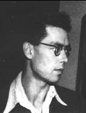
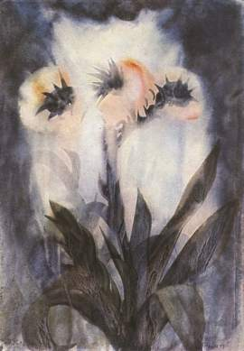

Over Max Prantl
Max Prantl werd op 6 november 1912 in Innsbruck geboren en groeide op in Mühlau, dat tegenwoordig een stadswijk van Innsbruck is maar destijds nog een zelfstandige gemeente was. Ten tijde van Prantls geboorte kwam Georg Trakl af en toe op bezoek in Gasthaus “Dollinger”, dat door de ouders van Prantl werd gedreven. Daaraan herinnert tegenwoordig nog het “Trakl-park”, dat tegenover de herberg aan Inn gelegen is.
Op het gymnasium in de Angerzellgasse te Innsbruck viel de veelzijdige begaafdheid van Prantl op, die zich evenwel ontwikkelde tegen de prijs van een chronische ziekte, onder andere ook astma. Zijn zwakke gezondheid belette hem medicijnen te studeren, een studie die hij ook in de oorlogsjaren nog ambieerde. Een eenzaam leven, terzijde van de gewone loop van succes in maatschappij en beroep, bleef voor hem weggelegd. Des te meer gaf hij toe aan zijn grote liefdes: schrijven, schilderen, musiceren. Hij componeerde en kon meeslepend improviseren.
Tijdens de oorlog kon hij zich tijdelijk inschrijven aan de Academie der Kunsten in Karlsruhe, waar hij als “garnisonsverwendungsfähig Heimat' (geschikt voor garnizoensdienst thuis) was opgeroepen en hoofdzakelijk schrijfwerk deed. Met de laatste lichting werd hij aan het eind van 1944 aan het oostfront ingezet, waar hij in het voorjaar ernstig gewond raakte. Zijn elleboog werd verbrijzeld, er ontstonden etterende ontstekingen en wondkoorts; de arm bleef stijf. Hij geraakte in Tsjechische krijgsgevangenschap, waarvan de ontberingen - zelfs het gras naast de barak was afgerukt en opgegeten - hem dicht bij de dood brachten. De Amerikanen die het bevel over het kamp overnamen verzorgden hem zodat hij weer enigszins gezond was. In de herfst van 1945 keerde hij naar huis terug.
Er volgden jaren van intensieve arbeid, als ging het erom een aan zichzelf gegeven belofte na te komen: “Ik ben door een hel gegaan, maar die heeft mij niet werkelijk kunnen verslinden. Mijn dank daarvoor moet een rusteloos scheppen zijn”. Wat hij vóór de oorlog had geschilderd, vernietigde hij. In 1949 verscheen bij universiteitsuitgeverij Wagner zijn boek “Der Mensch ohne Angst. Licht aus der Herzmitte”, ontstaan uit brieven waarin Max Prantl aan dr. Paul Bargehr, arts aan het Zeileis-Institut te Gallspach, zijn mystieke ervaringen en de betekenis van zijn aardse zending meedeelde.
Voor zover wij tegenwoordig uit de berichten te weten kunnen komen, contrasteert zijn uiterlijke verschijning opvallend met de radicale claims die in het boek en in andere geschriften van Prantl gesteld worden. Als “eenvoudig, bescheiden, pretentieloos” beschrijft zijn jongere zuster Elisabeth hem. Paula Schlier, medewerkster bij de “Brenner”, beschrijft hem als “een rijzige, mooie man met zijn ongewoon grote ogen, die herinnerden aan de ogen van keizers en heiligen op afbeeldingen van de Byzantijnse kunst”.
Het uiterlijke succes van zijn artistieke inspanningen stemde tijdens zijn leven niet overeen met de rusteloze, totale inzet van deze schilder-dichter. Van Prantls “sprookjes” zijn er slechts twee in tijdschriften gepubliceerd. De gehele cyclus, die Prantl na de oorlog tot een “mythenreeks” samenvoegde, is voor het eerst in 1990 gepresenteerd in “Aus dunklen Talen”, waarin behalve zijn mythen ook diverse indrukwekkende schilderingen zijn opgenomen. Enkele van de berg-afbeeldingen hingen vroeger in de kamers van herberg “Dollinger” en dragen voor een deel de sporen van schietoefeningen van bezettende soldaten. Andere schilderijen zijn door een latere binnenbrand beschadigd geraakt en hebben op verschillende plaatsen fletse, in plaats van de oorspronkelijke levendige kleuren.
Van de bloemen-afbeeldingen is in 1949 een map met reproducties verschenen. Gottfried Hohenauer schreef daarover: “Ook al zou je de schilder Max Prantl niet als de auteur van het boek “Der Mensch ohne Angst” kennen, dan zouden de afbeeldingen toch bij de eerste aanblik verraden dat de kunstenaar tot een wereld behoort die achter de dingen ligt. Hier worden geen beelden van bloemen in de gangbare betekenis voor ons ontvouwd - de plantenvormen van Prantl zijn als het ware sleutels tot fantastische ruimten die daarachter opengaan, of materialisaties van een verblindend licht- en kleurenplasma dat vanuit het centrum van het beeld zijn stralen uitzendt of als het ware als vlokken of nevel in de ruimte rondtast”.
Eén enkele keer trad de schilder Max Prantl in een feller licht van de openbaarheid , toen in oktober 1948 in het Künstlerhaus te Wenen een expositie van jonge Oostenrijkse kunstenaars plaatsvond. Van de deelnemers uit Tirol werden Alfred Hochschwarzer, Max Weiler en Max Prantl met prijzen bedacht. “Die daar en geen andere”, zou het jurylid Herbert Boeckl gezegd hebben, terwijl hij op Prantls schilderijen wees (welke het precies waren weten we niet). Sinds die tijd keek men, als het om de schilder en schrijver Max Prantl ging, liever de andere kant op.
Vanaf ongeveer 1953 was Max Prantl “erg ziek”. Omstanders hadden het gevoel dat zijn ziel, die hij als een lichtwezen zag, reeds tijdens zijn leven niet meer in het lichaam wilde wonen. De aanvallen op zijn boek hebben hem beslist murw gemaakt, en ook het feit dat zijn schilderijen op tentoonstellingen niet meer werden opgehangen als hij ze ter beschikking stelde. Hij stierf op 21 februari 1957 en ligt begraven in Mühlau, links naast de ingang van de parochiekerk. Naar aanleiding van zijn dood kwam Ludwig von Ficker tot een tamelijk dubbelzinnige waardering:“Deze weinige ontmoetingen lieten bij mij de indruk na van een ongewoon begaafd, buitengewoon voorkomend en tot heroïsche zelfopoffering bekwaam mens: eigenschappen die tegenwoordig niet meer aangetroffen worden. Zijn verschijning is mij daarom, ook al verdween hij uit mijn gezichtskring, in de geest altijd sterk bijgebleven als een soort drager van opoffering aan de rand van de waarheid. Als zodanig moest ik hem liefhebben en de waardigheid, waarmee hij zijn zware lot droeg, bewonderen”.
Zijn persoonlijke brieven geven met betrekking tot zijn artistieke bezigheden blijk van een groot vertrouwen. Op 1 maart 1944: “Het borrelt in mij van gedachten en plannen”, zodat hij “bijna de grond onder de voeten” verliest. De plannen betreffen het vervaardigen van werkstukken waarin schrijven, schilderen en muziek in gelijke mate een aandeel moesten krijgen. Deze “oorlog op drie fronten” zou hem “zijn hele leven lang vergezellen”. Enkele dichtregels uit 1943 laten zien dat er leidmotieven aangeslagen worden die zich pas na de oorlog, in de schilderingen van de Dolomieten, zouden doen gevoelen:
Eens was het middernacht: o gloed van de dood! Nu breekt een morgen aan die aan de grenzen waakt: met een nooit gezien licht kronen zich de stromen. Een ruimteloze verte verwijdt haar bogen tot ze in zwak glimmende glans verzinkt; in de wijde omtrek verheffen zich uit de mistige golven goud-lichte transen, overstelpt met voorjaarslicht; tot in het onwezenlijke breiden zich blauw-donker schemerende meren uit, verwijden zich eeuwige tuinen, staande in de wordende ochtend, en rozen gloeien op in het zon-verlichte, zacht glanzende geuren drijven rond; rivieren stromen tot in het eeuwige en lopen bruisend uit in het licht. Boven de dalen des doods straalt trots een blauwe trans, kroon van de stromen ochtendlicht, gebouwd tot in het eeuwige worden
“En stel je de schilderijen voor”, schrijft hij op 25 november 1943, “die op hun verwerkelijking wachten (ze zullen wel nauw aansluiten bij mijn gedichten, bijvoorbeeld het beeld waar Winnimunth bij het bergmeer staat (“Ze stond in het zinderende ochtendlicht en de duivel staarde naar haar. Vanuit de hoogte vlamden de rotskantelen...”). Daarbij het meer en de bloeiende hellingen! Het hele werk zou met zo”n beeld verheerlijkt moeten worden)”.

Aan alles, wat het innerlijke verband van de mythencyclus vormt, is reeds een wens-visioen voorafgegaan. Maar toch heeft dit optimisme - een teken van iets scheppends dat met stuwende kracht op doorbreken staat - iets van koortsachtige opgejaagdheid. Het doet de pijn van innerlijk gewond-zijn en de tragiek van een zichzelf-verteren in de diepte vermoeden, die mogelijk al niet meer terug te draaien waren. Dat lag beslist niet alleen aan het in deze jaren groeiende inzicht dat de rijks-idee van Adolf Hitler, waar Prantl in eerste instantie zeer grote verwachtingen van had, in werkelijkheid een “tegen de algemene natuurwetten” gerichte vermetelheid was. In een drama, dat tegelijkertijd met de sprookjes ontstond en Max Prantls verandering van gezindheid door verschillende versies heen concreet zichtbaar maakt, is Roosevelt als “ware vertegenwoordiger van joden en vrijmetselaars” de “hoogmoedige wereldverlosser Lucifer”, Churchill de “cynische, levenskrachtige Belial”, Stalin de “ijskoude wurger”. Hitler komt—nog als achter een masker—echter als de ergste naar voren, omdat hij het slechte van alle drie in zich verenigde. “Deze gedachte deed mij zo rondtollen, dat ik bijna mijn verstand verloor”, bekent Prantl op 31 augustus 1944. De apocalyptische situatie greep hem met alle heftigheid aan.
Het was werkelijk zo: Spoken nemen de dodenwacht op zich in een onder storm kreunende bakermat, omhoog in het donkerst van de nacht staren de skeletten van verwoeste tempels.
Uitlatingen tegen het einde van 1944 laten zien vanuit welke zielenacht Max Prantl de lichtvisioenen van zowel de sprookjes alsook de later gemaakte schilderijen omhoog getild heeft: “Ik kan toch nooit stilhouden en een rustige plek vinden. Van alles waar ik aan hing heb ik toch altijd weer afscheid moeten nemen. Dat was zo met mijn wereldbeschouwingen, met vrienden en met mijn eigen werken. (...) Maar nu meen ik te weten dat ik mijn Ahasveros-natuur toch nooit zal kunnen afleggen. (...) Vanuit deze onrust en ballingschap moet ik immers ook scheppen. Ik geloof dat de duivel in Winnimunth mijn meest getrouwe evenbeeld is, en het slot van het sprookje staat daar ook niet toevallig. Een Winnimunth van vlees en bloed zou mijn dorens waarschijnlijk niet zo uithouden” (4 oktober 1944). —“En toch heb ik vaak het gevoel alsof het vlak voor zonsondergang is. Maar je kunt er desondanks van op aan dat ik op het vlak van ziel en geest alles zal doen om later toch verder te kunnen scheppen. Want iedere ondergang komt in laatste instantie uit het gebied van het innerlijke zelf en is nooit toeval” (29 oktober 1944).